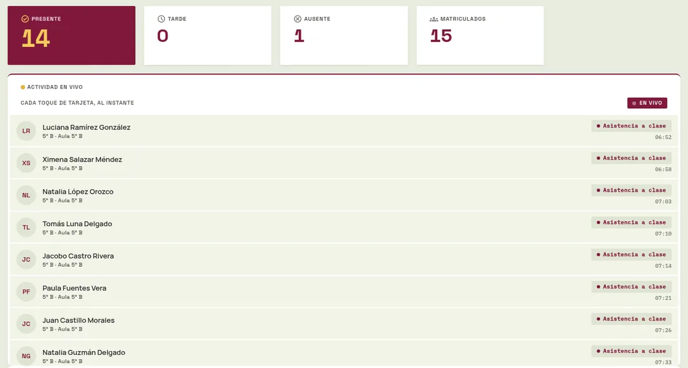
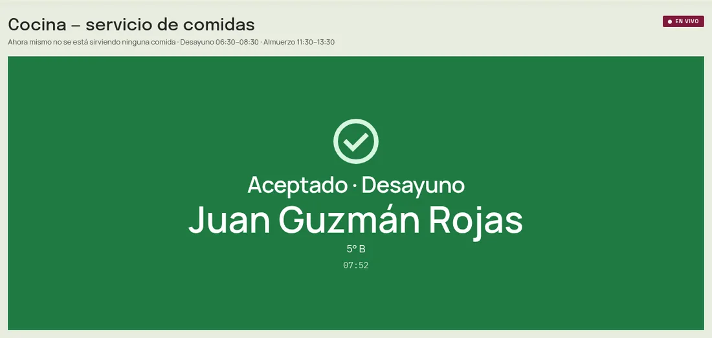
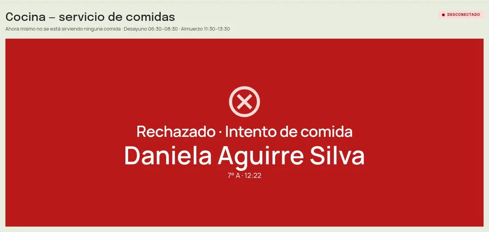

Pulse · Exposición
Cada día, un colegio produce miles de eventos.
Alguien llega. Alguien entra a clase. Alguien recibe su almuerzo. Alguien recicla una botella.
¿Dónde terminan?
Hoy, en muchos colegios
- En una lista de papel.
- En una hoja de cálculo.
- En un lector que no le informa a nadie.
- En una aplicación distinta para cada cosa.
El problema no es que falten datos.
Es que viven separados.
¿Y si todos entraran por la misma puerta?
Eso es Pulse: la infraestructura que convierte lo que pasa en el colegio en información útil. Veamos uno.
08:01colegio · 5° B
Recorrido de un evento
01 / 08
Una estudiante llega al colegio.
Martina, de 5° B. Un momento cualquiera, de los que se repiten cientos de veces cada mañana.
Martina Guerrero
Carné NFC o teléfono Android: para Pulse, las dos son credenciales.
08:01Aula 5° Bprimer toque del día
Acerca su carné al lector.
Un lector lee la tarjeta. Si trae su teléfono, el lector le hace una pregunta secreta que solo ese teléfono sabe responder.
[NFC] tarjeta detectada [NFC] UID C9B871F7 → lista para avisar // o, con un teléfono: el lector desafía // y solo ese teléfono sabe responder
El lector avisa a Pulse, de forma segura.
Encuentra solo al servidor del colegio, sin direcciones escritas a mano. Y su llave secreta nunca viaja: viaja una firma que solo sirve una vez.
POST /api/v1/events/tap {"credential_uid": "C9B871F7"} # el lector encuentra solo al servidor; # cada mensaje va firmado: si se altera, # se rechaza. Nada se puede repetir.
Pulse reconoce al lector, al colegio y a la estudiante.
El lector se identifica por su firma, el colegio se deduce del lector y la estudiante, de la tarjeta registrada. El mensaje solo trae el identificador de la tarjeta.
| Lector | Aula 5° Bla firma identifica al lector |
|---|---|
| Colegio | IE Concejo de Sabaneta J.M.C.Bsale del lector, nunca del mensaje |
| Credencial | C9B871F7 · activatarjeta física registrada |
| Estudiante | Martina Guerrero Castillo · 5° Bdueña de esa tarjeta |
Y decide qué significa ese toque.
El mismo gesto puede ser asistencia, un desayuno o un depósito de reciclaje. Lo define el lector y las reglas del colegio, no la tarjeta.
-
01
Lector de aula → asistencia a claseel lector de aula cuenta asistencia
-
02
Primer toque del día: cuentasi repite el toque, no suma dos veces
-
03
08:01, antes de la hora límite: a tiempoel colegio define la hora: aquí, 08:15
-
↳
En el comedor, cinco reglas justasdía de clase · hora de la comida · inscrita · vino hoy · una por día
Ahora es una fila. Una sola verdad.
Quién, dónde, qué y cuándo. Asistencia, comedor y reciclaje se calculan a partir de esta misma tabla: nadie guarda su propia copia.
| id | tipo | estudiante | lector | hora | served |
|---|---|---|---|---|---|
| 66706 | CLASS_ATTENDANCE | Felipe Robles | Aula 5° B | 07:41 | ✓ |
| 66707 | CLASS_ATTENDANCE | Juan Guzmán | Aula 5° B | 07:48 | ✓ |
| 66708 | CLASS_ATTENDANCE | Cristian Romero | Aula 5° B | 07:55 | ✓ |
| 66709 | CLASS_ATTENDANCE | Martina Guerrero | Aula 5° B | 08:01 | ✓ |
quién · dónde · qué · cuándo · resultado
Quien lo necesita, lo ve al instante.
El panel del docente se actualiza solo, en menos de un segundo. En el comedor se pinta verde o rojo. Y un teléfono conectado a un parlante confirma cada toque con un sonido.


bip · puente de audio
Y esa misma fila sigue trabajando todo el día.
Un toque de dos segundos se convierte en un dato que otras partes del colegio pueden usar, sin volver a pedirlo.
-
PAE
Habilita su desayuno.El comedor exige una asistencia anterior del mismo día.
-
REP
Entra a los reportes.Diarios y mensuales, por clase y por estudiante, en PDF y CSV.
-
NL
Responde preguntas.«¿Quién llegó tarde hoy?», en lenguaje natural.
Lo que parecía una lista de asistencia es una infraestructura.
Cinco capas. Cada una hace una sola cosa y le entrega el resultado a la siguiente.
01Física
Donde ocurre la vida del colegio.
02Eventos
Cada toque se vuelve un hecho con nombre.
03Infraestructura
Lo que nadie ve y todo lo sostiene.
04Inteligencia
Lo que se puede entender cuando hay orden debajo.
05Experiencia
Cada persona ve lo que le corresponde.
La columna vertebral
Tres aplicaciones. Una sola tabla.
Asistencia, alimentación escolar y reciclaje no
guardan copias propias: son lecturas distintas
de la tabla events. Por eso sus
números no pueden contradecirse.
| hora | tipo | estudiante | lector | estado |
|---|
La arquitectura, tal como está construida.
Cada nodo existe en el código. Tócalo para ver qué hace y dónde vive, o elige un recorrido y míralo moverse.
Fuera del diagrama, a propósito: el escaparate comercial es otro sistema aparte, sin base de datos y sin conexión con el núcleo. Vende el producto; no lo opera.
Un colegio, sus datos. Otro colegio, los suyos.
Una instalación de Pulse puede atender a varias instituciones. Cada registro pertenece a un colegio, y el servidor aplica esa pertenencia en cada consulta.
AColegio A
- Personas y roles
- Estudiantes y cursos
- Lectores del colegio
- Eventos del día a día
- Puntos y recompensas
- Escudo y colores propios
BColegio B
- Personas y roles
- Estudiantes y cursos
- Lectores del colegio
- Eventos del día a día
- Puntos y recompensas
- Escudo y colores propios
- 01La separación está en el corazón del sistema: todas las pantallas la respetan, sin excepción.
- 02El colegio de un evento se toma del lector que lo envió. El mensaje nunca decide a qué colegio pertenece.
- 03Pedir lo ajeno responde “no existe”: ni siquiera confirma que esté ahí.
- 04Lo nuevo pertenece al colegio de quien lo crea; nadie puede anotarse en otro.
Misma interfaz, identidad de cada colegio
Perfil incluido hoy: IE Concejo de Sabaneta J.M.C.B. Agregar otro colegio es una fila, un bloque de configuración y una carpeta con su escudo.
Con precisión: una sola base de datos donde cada dato lleva su colegio, y el sistema filtra siempre. No son bases separadas. La cuenta general, sin colegio asignado, ve todas por diseño.
Pulse no vive dentro de un navegador.
Empieza en un pasillo, con una tarjeta y un lector. Termina en una decisión. En medio, una sola infraestructura.
Mundo real
Mundo digital
Y de vuelta
El camino también regresa al mundo físico.
El lector responde con luces —y sonido, si tiene bocina— según el resultado. La cocina ve verde o rojo, con el motivo. Un teléfono conectado a un parlante confirma cada toque.

La inteligencia necesita algo debajo.
Un modelo de lenguaje no sabe quién llegó tarde. Pulse sí. Por eso el modelo no hace cuentas: elige cuál de las 27 consultas de Pulse responde la pregunta, y Pulse calcula.
Elige una pregunta.
El modelo elige la función.
El
número lo calcula Pulse.
Así, el panel, el reporte y la respuesta en lenguaje natural salen del mismo código y no pueden dar cifras distintas.
- Cada pregunta lleva la fecha del colegio; cada profe solo ve sus cursos.
- Las respuestas se muestran como texto: nada de lo que diga el modelo se ejecuta como código.
- Hoy responde con un modelo externo (DeepSeek). Sin clave, el sistema lo dice en vez de inventar.
Demostración guionizada con datos de ejemplo. En el sistema, la respuesta sale de la base de datos.
Visión por computador
Una foto, un material, unos puntos.
En la estación de reciclaje, una imagen se clasifica antes de otorgar puntos. Ese paso de verificación es lo que hace creíble el incentivo.
stub
Determinista, para pruebas y demostraciones sin red.
local
Un servicio propio del colegio. Hoy con un modelo provisional; el definitivo está en camino.
deepseek
Visión en la nube como alternativa. Requiere clave.
Cambiar de clasificador es un ajuste: el resto no se toca. Y una foto sin tarjeta no se envía a clasificar hasta que alguien la reclama.
Para quien quiera mirar más de cerca.
Cada tema abre una pieza real del sistema: qué problema resuelve, cómo lo resuelve y dónde está en el código. Si el código no es lo tuyo, sigue de largo: lo importante ya quedó arriba.
La llave del lector nunca viaja por la red.
Cada solicitud de un dispositivo lleva una firma calculada con su llave. El servidor la recalcula, rechaza cualquier nonce repetido durante 24 horas y descarta el mensaje si alguien cambió un solo byte. Sin reloj en el ESP32, la frescura depende del nonce, no de la hora.
Authorization: Pulse-HMAC kid:nonce:sig kid = sha256(api_key)[0:16] # huella pública sig = HMAC-SHA256(api_key, "METHOD\npath\nnonce\nsha256hex(body)") # misma cadena canónica en PHP (DeviceRequestSigner) y en C++ (RequestSigner), # con un vector de prueba compartido fijado en ambos repositorios
Un teléfono Android que se comporta como una tarjeta.
La app pulse-credential emula una tarjeta por HCE. Cada teléfono genera su propia llave en el Android Keystore; ningún secreto viaja dentro de la app. El lector solo transmite el desafío y la respuesta, y es Pulse quien la verifica con la llave cifrada de esa credencial. Una credencial perdida se revoca desde el panel.
SELECT AID F0010203040506 CHALLENGE → HMAC-SHA256(K_cred, credId ‖ nonce) ENROLL 80 20 00 00 · sin llave → 6A88 envoltura = K ⊕ HMAC(reader_key, "pulse-hce-key-wrap/v1\n" ‖ credId ‖ "\n" ‖ nonce) # el UID de radio del teléfono cambia en cada toque: nunca se usa como identidad
Un servidor WebSocket escrito a mano, en PHP.
Sin paquetes adicionales: un bucle
stream_select con el protocolo RFC
6455. Observa la tabla de eventos cada 300 ms y
envía cada fila nueva a los paneles autorizados
de su colegio. Si el proceso cae, los lectores
siguen funcionando: escribir un evento no
depende de él.
ws://host:8081/app?token=userId.expiry.hmac ← {"type":"hello", "events":[…]} ← {"type":"tap", "event":{…}} # asistencia, PAE, reciclaje ← {"type":"pairing" | "roster" | "recycling" | "feedback", …} # cada conexión recibe solo lo de su rol y su colegio
Los lectores encuentran el servidor solos.
./run serve anuncia el servicio
_pulse._tcp en la red local. El
firmware lo descubre, valida la versión del
protocolo y usa la IP resuelta. Si el computador
cambia de dirección, no hay que recompilar ni
volver a flashear los lectores.
_pulse._tcp.local puerto 8000 TXT version=1 protocol=1 api=/api # además, un re-anuncio periódico sin esperar preguntas, # para redes que pierden el tráfico multicast entrante
Cinco reglas antes de servir una comida.
Cada toque en el comedor se evalúa antes de escribir nada, dentro de una transacción con bloqueo por tarjeta. Si pasa, es una comida servida. Si no, queda como intento marcado, con su motivo, y no se cuenta en ninguna estadística.
- Lunes a viernes, en hora de Bogotá.
- Exactamente una franja activa; la comida se detecta por la hora, no por el lector.
- Inscripción para esa comida en particular: desayuno y almuerzo son independientes.
- Una asistencia a clase anterior, el mismo día.
- Una sola comida de cada tipo por estudiante al día.
Un libro contable, no un contador.
Los puntos no se guardan en la ficha del
estudiante. Cada ganancia y cada canje es una
entrada nueva en points_ledger, y
el saldo es la suma. Los canjes se hacen en una
transacción con bloqueo y son idempotentes: un
doble clic no gasta dos veces.
saldo = SUM(delta) -- nunca un campo que se sobrescribe +10 reciclaje event_id=… +15 reciclaje event_id=… −20 canje reward_id=… "Entrada a la rifa"
La lógica del lector se prueba en un computador.
Todo lo que no depende del hardware —payloads, parsers, modos, antirrebote, patrones de LED, protocolo HCE, firma— vive en una biblioteca C++ pura con pruebas nativas. Un harness envía los bytes exactos del firmware a un backend real y pasa las respuestas por su propio parser.
Cada cambio pasa por la misma batería.
Pruebas unitarias, de integración y de extremo a extremo, más un e2e por HTTP real sobre una base desechable. La integración continua corre la suite en SQLite y en MariaDB, en Arch Linux, en Windows y en un contenedor sin PHP instalado.
Primero lo atacamos nosotros.
Una auditoría adversarial del 15 de septiembre probó el sistema en vivo. La capa de autorización resistió. Lo que no resistió se corrigió y quedó documentado:
- La llave del lector viajaba en texto claro → firma por solicitud con nonce de un solo uso.
- Toques repetidos sumaban asistencias → el primer toque del día es el único que cuenta.
- Un secreto HCE compartido por todas las apps → una llave por teléfono, verificada por el servidor, revocable.
En dos idiomas, con un comando por operación.
Interfaz, mensajes del API, salida del monitor serie del lector, app y documentación existen en español y en inglés; las pruebas fallan si la documentación pierde su par. Operar el núcleo es un solo punto de entrada.
./run setup # dependencias, .env, clave, base de datos, datos demo ./run serve # web :8000 + tiempo real :8081 + anuncio mDNS ./run test # unit | feature | e2e ./run doctor # diagnóstico con la corrección exacta ./run toolchain # PHP y Composer herméticos, sin root
Pensado para operar, no solo para mostrar.
Lo que un colegio necesita para usarlo un lunes cualquiera, ya existe como pantalla, no como una consulta SQL.
| Lo que el colegio necesita | Dónde está en Pulse |
|---|---|
| Registrar a sus estudiantes |
Uno por uno o por CSV, con inscripción al
desayuno y al almuerzo por separado./admin/students
|
| Crear cuentas del personal |
Administración, docentes y cocina, con
contraseña temporal y cambio obligatorio al
entrar./admin/staff
|
| Instalar un lector |
Llave generada por el servidor y mostrada
una sola vez; rotación y cambio de modo
desde el panel./admin/readers
|
| Entregar una tarjeta o vincular un teléfono |
Escritorio de emparejamiento con ventana de
45 segundos, en vivo. Revocación de
credenciales perdidas./admin/pairing
|
| Ajustar horarios y reglas |
Franjas de comida, hora de llegada tarde,
ventana de emparejamiento: se aplican de
inmediato./admin/settings
|
| Rendir cuentas |
Reportes de asistencia, PAE y reciclaje,
diarios, mensuales y por estudiante, en PDF
y CSV con la identidad del colegio./admin/reports/…
|
| Servir el comedor |
Pantalla de cocina a distancia de lectura,
con aceptado o rechazado y su motivo./kitchen
|
| Canjear puntos |
Catálogo de recompensas con stock y un
escritorio de canjes con verificación./admin · /student/rewards
|
Documentación en español e inglés, con ejemplos listos para probar. Cualquier aparato que envíe un mensaje firmado puede ser un lector.
Un comando lo instala todo: base de datos del colegio incluida.
Un sitio comercial independiente presenta el producto en paquetes Starter, Campus y Enterprise, y recibe solicitudes de demostración.
¿Qué cambia cuando un colegio trata la presencia como infraestructura?
- Un dato se registra una vez y sirve para todo.El mismo toque alimenta la asistencia, habilita el comedor y llega a los reportes.
- Las cifras dejan de contradecirse.Paneles, reportes y respuestas en lenguaje natural usan el mismo cálculo sobre la misma tabla.
- La información llega cuando ocurre.No al final del día ni en una planilla que alguien transcribe después.
- Lo rechazado también queda auditado.Cada intento fallido tiene su motivo, y ninguno infla las estadísticas.
- Preguntar no exige saber de bases de datos.Un directivo pregunta en español y recibe un número calculado, no uno inventado.
- La próxima aplicación no empieza de cero.Identidad, dispositivos, colegios, tiempo real y reportes ya están resueltos debajo.
08:01
No debería ser
una fila más en una tabla.
08:01
Es un evento.
Pulse convierte ese evento en infraestructura.
La infraestructura para saber qué pasa en tu colegio.
El sistema real requiere
./run serve en esta máquina.